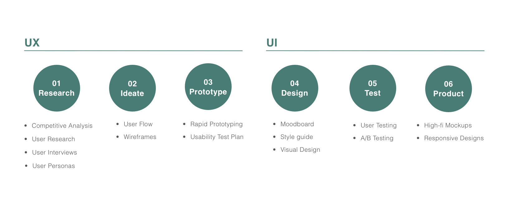
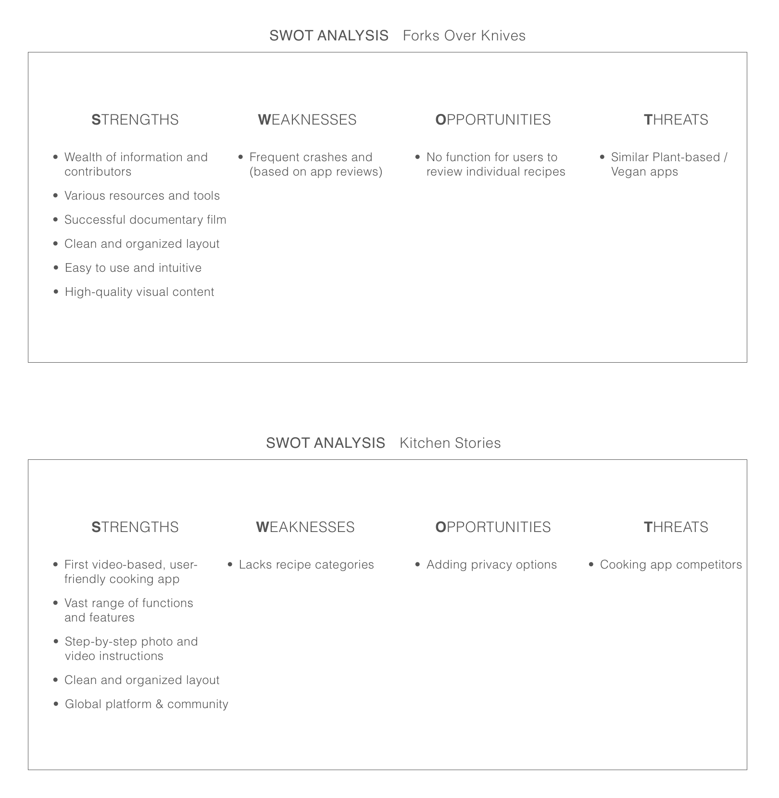

Cooklet is a mobile application that offers the hungry consumer at any cooking level the functions to discover new and easy recipes through an enjoyable experience with a sense of comfort.
KEY FEATURES
Find recipes based on ingredients and cuisines
Personal shopping list
Step-by-step instructions
Socialize and share with other users by commenting and liking their recipes
User profile
Upload own recipes and photos
Recommendations, reviews, and bookmarks
THE GOAL
Engage the user enough so they utilize the product and inegrate it as part of their daily life.
THE CHALLENGE
How can I provide a user with the best possible experience?
What necessary features and tasks do I need to include for the target audience?
THE PROCESS

01 RESEARCH
COMPETITIVE ANALYSIS

USER RESEARCH
who
Users who enjoy cooking at any level and interested in learning new recipes. Targeting young adults in their 20s-40s.
what
Users will find easy recipes and inspirations based on their diet and preferences. They will create a personal account, follow step-by-step cooking instructions through high quality content, create a personal shopping list, share recipes
and connect with friends, family, and peers.
when
Product will be used when users are looking for cooking inspiration or to create a dish at home.
USER INTERVIEWS
I conducted a series of user interviews with 3 participants to find out their goals and frustrations in order to get a better understanding of the problem. I used conversational and form surveys for each user research.
Questions included:
1. Are you currently using any apps/websites that are involved with cooking?
2. How often do you cook at home?
3. Do you ever look at the ratings or read reviews? Do you trust them?
4. Where do you search for recipes of cooking inspirations?
5. What are your favorite and least favorite features on an app or website?
6. How do you think a cooking app would be useful for you and your everyday life?
Patterns noticed:
Cooks for themselves or others 4 to 5 days out of the week
Looks at ratings and read reviews but does not necessarily trusts them
Does not currently have any cooking or food apps
Favors when app is easy to navigate around and seamless
Wants to use the ingredients they already have at home and adapt into new recipe
Would not pay for an app
Gets frusterated when spending too much time researching